学习地图：这 4 章在讲什么
第 1–4 章是全课程的地基：先建立「芯片从需求到流片」的全局视角，再掌握物理实现要用到的三套底层语言——电路语言（标准单元）、时序语言（setup/hold 与各类 variation 模型）、工艺语言（metal stack 与单元库）。后面 5–43 章的所有实操，都是在反复使用这 4 章的概念。
芯片的诞生：前端 → 后端
四章知识点之间的依赖关系
- 第1章回答「后端是干什么的」——为所有章节提供流程坐标。
- 第2章回答「工具摆的是什么」——row/site/port/pin 是 Floorplan、Place 章节的对象。
- 第3章回答「好坏怎么衡量」——setup/hold、PVT、OCV/CRPR、skew 是贯穿 place/CTS/route/ECO 的评价体系，也是校招面试频率最高的部分。
- 第4章回答「在什么材料上做」——metal stack 决定了电源、时钟、信号各用哪层金属。
数字 IC 设计流程
1.1 前端 vs 后端：一条分界线
整个数字 IC 设计以网表（Netlist）为界，分成前后两段：
| 前端设计 | 后端设计（物理设计） | |
|---|---|---|
| 输入 | 客户需求 Spec | 网表（综合后的门级电路） |
| 输出 | 网表 | GDSII 版图文件 |
| 核心任务 | RTL 设计、IP 集成、DFT、功能验证、逻辑综合 | 把逻辑电路「变成物理图形」：布局、布线、时钟树、时序收敛、物理验证 |
| 本质 | 回答「电路做什么功能」 | 回答「电路如何落在硅片上还能正确、快速地工作」 |
1.2 后端 PR 全流程（Block 级）
- Floorplan —— 规划芯片/模块的面积、摆放 macro 和 port
- Power Plan —— 搭建电源网络（stripe / rail）
- Placement —— 摆放标准单元
- CTS（Clock Tree Synthesis） —— 构建时钟树
- Routing —— 金属绕线（含 route opt）
- Chip Finish —— 插 decap / filler，补全版图
- StarRC + STA —— 抽取寄生参数，做静态时序分析
- ECO —— 修复剩余时序违例
- PV（物理验证） —— DRC / LVS 检查
- （可选）功耗分析、DFM 处理
对应课程章节：7–15 章（Floorplan+电源）→ 16–19（Place）→ 20–27（CTS）→ 28–31（Route）→ 32–33（Finish）→ 34–36（抽取+STA）→ 37–38（ECO）→ 39–43（GDS/PV）。
1.3 给初学者的学习建议（原文观点）
- 红色分界线以下（后端部分）是重点：要弄清每个步骤做什么、为什么要做。
- 先建立全局流程认识，后续学习才有针对性。
- 逻辑综合、形式验证只需大体知道用途，不必深究。
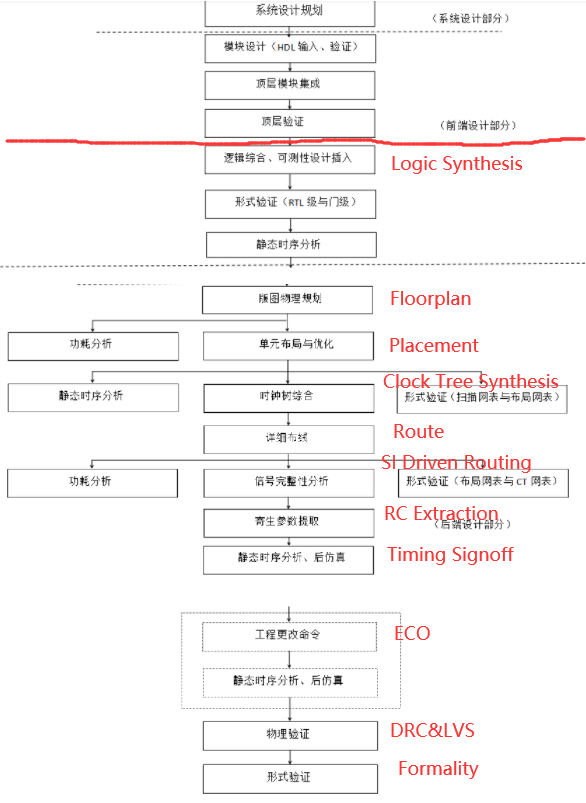
物理设计基础概念
2.1 标准单元（Standard Cell）基础
一个标准单元库通常含数百个单元。按电路功能分两大类：
组合逻辑电路
输出只取决于当前输入，无记忆。
| 类别 | 单元 |
|---|---|
| 反相类 | INV NAND NOR（输入端一般 2–4 个，接 1 个输入时等效反相器） |
| 非反相类 | BUF AND OR（同样，单输入时等效 buffer） |
| 常用逻辑 | MUX XOR TBUF 及复合门 AOI / OAI |
| 特殊功能 | 加法器、乘法器、除法器等 |
注意：输入端数目太大会带来时序收敛问题。
时序逻辑电路
输出与当前输入和上一时刻状态都相关，有记忆。
| 类别 | 特点 |
|---|---|
锁存器 Latch（如 D Latch） | 电平敏感，多用于高速通信时钟电路 |
寄存器 Register / DFF | 时钟边沿触发，仅在时钟沿采样输入；ASIC 数字设计的主力 |
flip-flop 广义上指一切由交叉耦合门构成的双稳态电路（含单稳、振荡电路）。
驱动强度与单元库多样性
- 每个逻辑功能（如 INV）都对应多种尺寸（W/L）、多种驱动强度的单元，驱动强度是基本尺寸的整数倍。
- 库越丰富，综合和 P&R 工具的选择空间越大，设计者越能自由地在性能、面积、功耗、成本间权衡。
面向自动布局布线的版图规则（重点理解）
| 规则 | 为什么 |
|---|---|
| 所有单元等高（或为基本高度的整数倍）的矩形 | 保证能整齐地排在 row 上，不产生奇怪尺寸 |
| 版图用预先定义的模板设计 | 保证任意单元相邻摆放时不触发 DRC |
| 输入输出 pin 的位置/大小/形状满足网格（grid）间距 | 经典布线器基于网格布线，可简化算法、降低内存占用 |
| 电源/地线位于单元上下边界 | 相邻单元共享电源轨，节省面积 |
版图最终产出两套库文件：LEF（物理库：尺寸、pin 位置）与 .lib（时序库：延迟、功耗模型），供顶层芯片和模块单元调用。
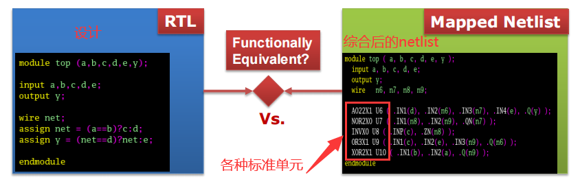
2.2 Row 与 Site：摆放的坐标系 Floorplan 前置知识
SITE 语句）。SIZE 给出宽高；X / Y / R90 表示允许的翻转方向。标准单元的宽高都是 site 的整数倍。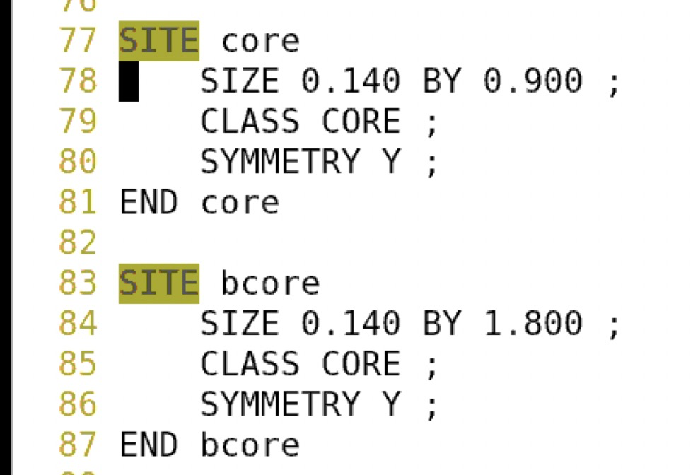
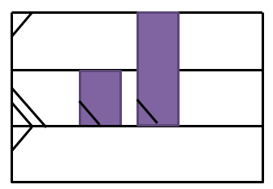
2.3 Port · Terminal · Pin：三个容易混淆的词 面试易混
| 术语 | 属于谁 | 含义 |
|---|---|---|
| Port | 逻辑概念，属于 block 模块 | 模块的端口/接口信号。网表中写作 module design_name (port1, ..., portn);——它描述的是「带功能的黑盒子」对外连接关系，是纯逻辑存在，没有物理形状。 |
| Terminal | 物理概念，属于 PR 阶段 | PR 时要把逻辑连接变成金属连接，于是在每个 port 上创建一个 terminal——一块真实的 metal shape，与 port 一一对应。工具绕线就是通过这块 metal 实现物理连接的。 |
| Pin | 属于 cell（单元） | cell 的引脚。例如 AOI cell 有 3 个输入 pin（A2、B1、B2）和 1 个输出 pin（ZN）。cell 的「功能」正是通过这些 pin 实现的——就像人有手有脚才能发挥功能。 |
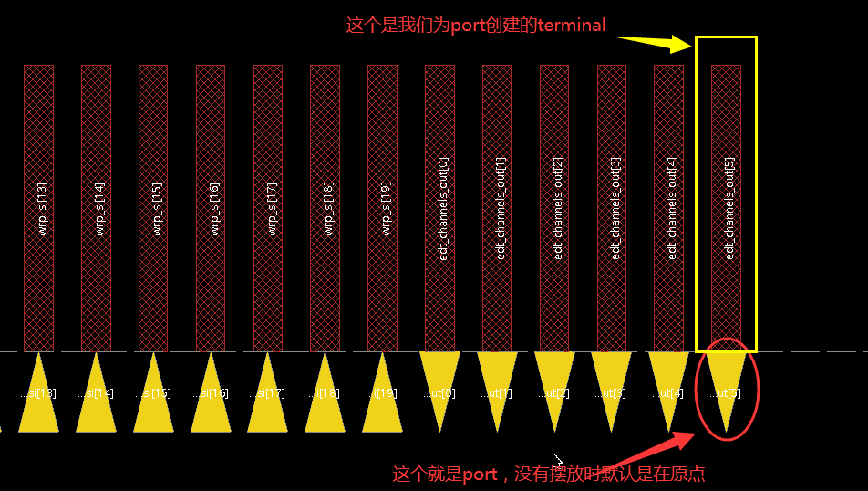
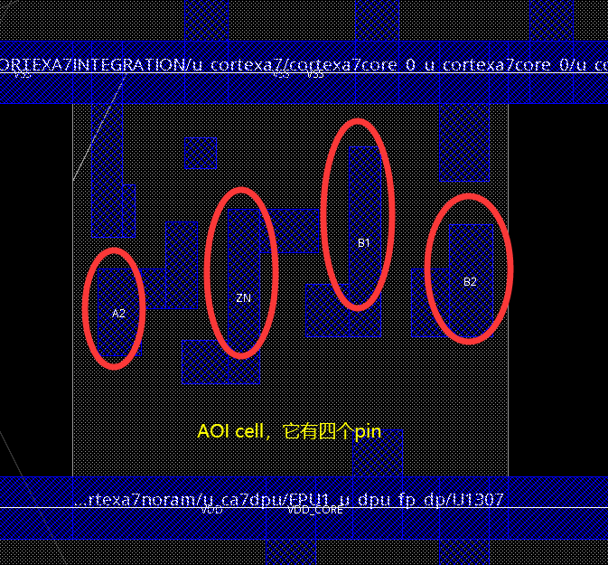
时序约束基础概念 ★ 全课程最重要的理论章
3.1 Setup 与 Hold：时序分析的根基 校招必问
建立时间 Setup Time
在采样时钟沿到来之前，数据必须提前保持稳定的最短时间。
Data must be stable at least before the active clock edge for it to be latched correctly.
保持时间 Hold Time
在采样时钟沿到来之后、下一次数据变化之前，数据必须继续保持稳定的最短时间。
Data must remain stable at least after the active clock edge.
名词表（配合原文电路图记忆）
Hold: Th = Tdata2 − Tlatch = Tclk1 + Tco + Tdata − Tclk2 = T1 − Tskew，注意：没有 Tc！
② Hold 检查只发生在同一个采样沿前后，发射沿从头到尾没有参与——所以公式里没有 Tc → hold 与时钟频率无关；关键路径越长对 hold 反而越有利。实际设计中 hold 通常问题不大，setup 才是 timing 的关键。
由 setup 公式还能直接得到两条设计直觉：
Tc越大 → Ts 越容易为正 → 频率换时序裕量；- 关键路径
T1越长 → Ts 越小 → 建立时间违例通常就是关键组合路径太长。
延伸：时钟源到各寄存器的路径布局布线很重要——这就是 FPGA 推荐用 PLL 输出时钟、而不是自己分频的原因。「给定电路求最高工作频率」的计算题务必会做。
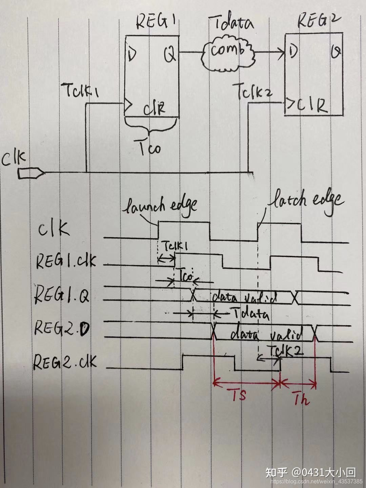
3.2 延迟计算模型（Delay Calculation）了解层次即可
延迟分两大类：cell delay（单元内部延迟）与 interconnect delay（互连线 / net delay）。参数以查找表（Lookup Table）形式存储。之所以需要专门的延迟计算，是因为存在复杂的输入电容、电压降、电压岛、高阻网络等非理想因素。
Cell Delay 模型
| 模型 | 一句话理解 |
|---|---|
NLDM | 非线性延迟模型，按（输入过渡 + 输出负载）查二维表，最经典 |
SPDM | 可伸缩多项式模型，用多项式拟合 |
ECSM | 有效电流源模型，精度更高 |
CCS | 复合电流源模型，先进工艺常用 |
Interconnect Delay 模型
| 模型 | 一句话理解 |
|---|---|
WLD | 线负载模型，综合阶段按扇出估算线长（无物理信息时的近似） |
Lumped RCL | 把整条线集总成一个 R/C/L |
Elmore | 经典 RC 树延迟近似，简单快速 |
Arnoldi | 阶数缩减的精确 RC 网络求解 |
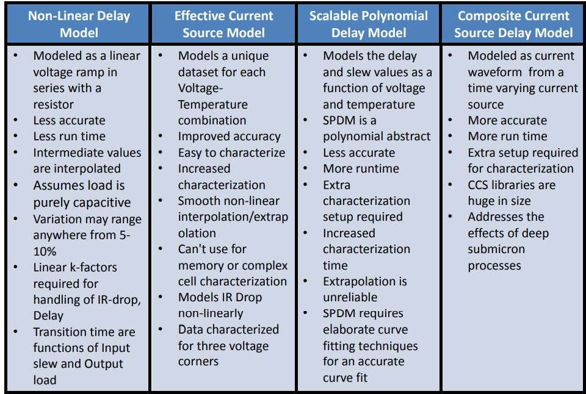
3.3 RC 模型：net delay 的物理来源
绕线本质是一段有电阻、有电容的金属，三个公式决定了它对时序的影响：
同层耦合电容 Cc ∝ T / S S 同层相邻线间距 —— 厚一点、近一点，耦合更大
层间表面电容 Cs ∝ W / D D 相邻两层金属间距，W 走线宽度
net delay ≈ 3 × R × C RC 越大，net delay 越大
| 物理量 | 怎么变小 | 设计上的直接应用 |
|---|---|---|
| 线电阻 R | 加宽 W、加厚 T（高层金属更厚） | Power plan 用高层金属打——电阻小、IR drop 小（第13-14章会反复用到） |
| 耦合电容 Cc | 拉开同层间距 S | 串扰（crosstalk）的罪魁祸首就是耦合电容；时钟线做 NDR（加倍间距）的依据（第22章） |
| 表面电容 Cs | 减小走线宽度 / 拉大层间距 | 走线越宽电容越大 → 驱动它的 cell 要更强 |
3.4 PVT 与工艺角（Process Corner）面试常问
MOSFET 参数在晶片之间、批次之间变化很大。工艺厂把器件性能限制在若干个「角」内：
N/P 管速度各取 快/慢 组合；ss = 左下角，tt = 中心，ff = 右上角
- Fast ≈ 薄栅氧、低阈值 → 驱动电流（Ids）最大；Slow 反之。单一器件测量结果呈正态分布，5 个 corner 覆盖约 ±3σ（99.73%）。
- 造成偏差的因素：掺杂浓度、制造温度、刻蚀程度等 → 同一晶圆不同区域、不同晶圆之间都有差异，只能用统计方法评估。
- 工艺角之外再叠加电压（如 1.0V±10%）和温度（-40 / 0 / 25 / 125℃）的组合，就是 PVT。
| STA 标准条件 | 组合 | 用途 |
|---|---|---|
WCS Worst Case Slow | slow 工艺 + 高温 + 低压 | 最坏建立时间分析 |
TYP Typical | typical 工艺 + 常温 + 标称电压 | 典型情况 |
BCF Best Case Fast | fast 工艺 + 低温 + 高压 | 最好情况（hold 分析） |
WCL Worst @ Cold | slow 工艺 + 低温 + 低压 | 低温下 slow 工艺反而更慢的 corner（温度反转效应） |
ML Max Leakage | fast 工艺 + 高温 + 高压 | 功耗分析用：漏电最大 |
TL Typ Leakage | typical 工艺 + 高温 + 标称电压 | 功耗分析用：典型漏电 |
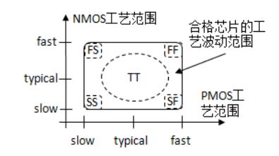
3.5 OCV：从「统一悲观」到「统计精确」面试高频
OCV = On-Chip Variation：同一颗芯片上的晶体管也会有快有慢。先分清两种 variation：
| 类型 | 含义 |
|---|---|
| Global variation | 芯片之间的性能差异（批量制造无法保证每颗一致），本质就是 PVT |
| Local variation | 同一颗芯片内同一器件表现不一致——OCV 真正要处理的对象 |
PVT 三个字母在芯片内的具体表现：
ID = ½μCox(W/L)(VGS−VTh)² 中每个参数都受影响三代 OCV 分析方法（演进主线：悲观度递减、精度递增）
| 方法 | 机制 | 特点 |
|---|---|---|
| OCV flat derate |
对 launch / capture / data 路径统一乘一个 derate 系数。如 setup：launch ×1.1（更慢），capture ×0.9（更早）→ 双向拉开悲观 | 简单粗暴，悲观度最高；common path 会被重复悲观（引出 CRPR） |
| AOCV = SBOCV，stage based |
derate 不再是常数，而是查表：path depth（逻辑级数越深，统计平均效应越明显，derate 越小）+ path distance（物理跨越距离） | 比 flat OCV 精确，悲观度显著降低 |
| POCV = SOCV，statistical |
把每个 cell 的 delay 建模成正态分布（均值 μ + σ），整体落在 ±3σ 内概率 99.7%。σ 可来自 .lib，也可通过 read_aocvm 读参数文件计算 |
最先进，单一 cell 级统计建模，不依赖 stage 深度近似 |
实现方式：① 使用与主 PVT 库配套的「微小差异」PVT 库；② 用 set_timing_derate 设全局 derate 值。
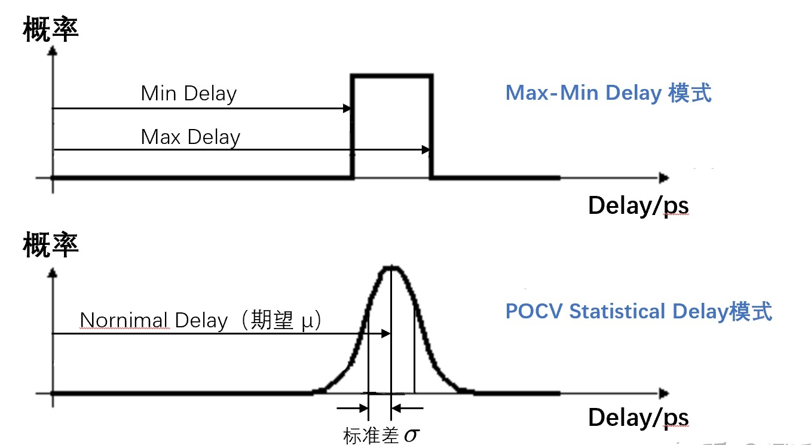
3.6 CRPR：把 common path 上「重复的悲观」减掉
考虑 OCV 的 setup 检查时，launch 和 capture 两条时钟路径在分叉前有一段公共路径（common path）。物理上这段公共路径只存在一种真实延迟，但计算时却被分别乘上了 late（×1.2）和 early（×0.9）两个 derate——两套悲观互相矛盾，计算过度悲观。CRPR（Clock Reconvergence Pessimism Removal）就是把这部分多余悲观减掉：
= 1.2×1.2 − 1.2×0.9 = 1.44 − 1.08 = 0.36ns
修正后：Tmin = 7.171 − 0.36 = 6.811ns 周期变小 → 性能提升
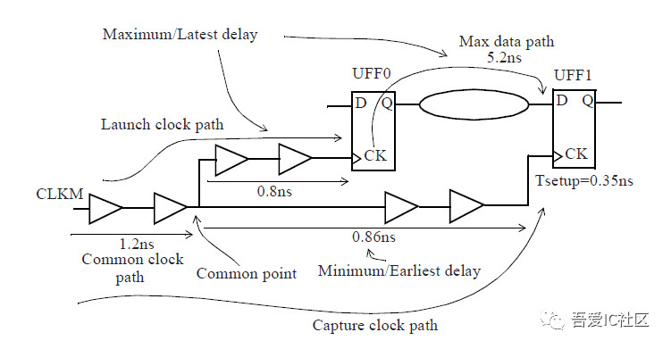
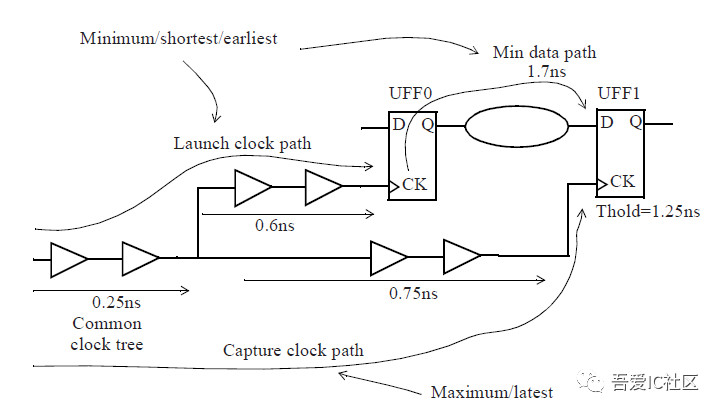
3.7 Clock Skew：一把「双刃剑」setup/hold 权衡
本课程的定义约定（先统一语言，避免与其他教材混淆）：
Hold 万能式： (Tlaunch − Tcapture) + Tck2q + Tdp ≥ Thold
左边 = launch path，右边 = capture path —— 这正是 PT timing report 的结构
| Skew 情形 | 对 Setup | 对 Hold | 记忆口诀 |
|---|---|---|---|
| Positive（capture 晚到） | slack 变大（数据可用窗口 = 1 周期 + skew） | slack 变小（更易违例） | skew 是零和博弈：占了一边的便宜，就欠另一边的债 |
| Negative（capture 早到） | slack 变小（窗口 = 1 周期 − skew） | slack 变大 |
波形角度理解：setup 检查的是「发射沿发数据 → 采样沿采样」的区间。Positive skew 时采样沿被推迟，这个区间比一个周期还宽，数据只要在此范围内到达即可 → setup 更容易满足；而 hold 检查发生在同一采样沿前后，采样沿推迟后新数据到达得更晚，旧数据必须保持得更久 → hold 更紧张。
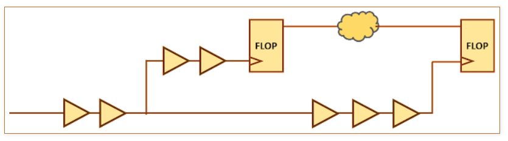
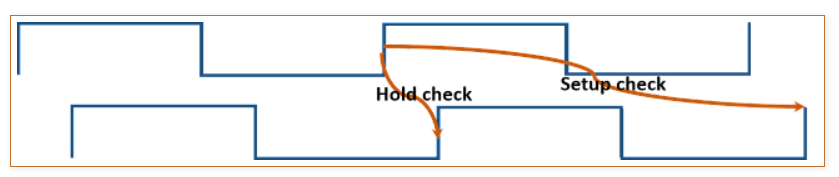
28nm 工艺知识
4.1 Metal Stack：1P10M5x2y2z 逐项解读 面试会问
训练营的 ARM A7 项目基于 TSMC 28nm，Metal Stack = 1P10M5x2y2z，命名逐项拆开：
| 记号 | 含义 |
|---|---|
1P | 1 层 Poly（多晶硅栅） |
10M | 10 层 Metal |
5x | M1–M6：线宽为 1 倍最小线宽（最薄，密度高，供信号细绕） |
2y | M7–M8：2 倍最小线宽（更厚） |
2z | M9–M10：厚金属层（原文按 8 倍宽度理解，低阻，适合 power） |
AP | 最顶上还有一层 RDL（Redistribution Layer）——top metal 上的一层 AL（铝）。铜太硬无法 bonding，pad 区域用软的铝做键合垫；个别设计也可借它走线（需多一层与 top metal 的 via mask），但一般信号不走这层：绕不了几根线还容易 DRC |
M8 + M9；② 时钟走高层：需满足 NDR（加宽/加倍间距）以降低串扰和延迟，选
M5–M8（也可 M7+M8）；③ 信号走中间层；
④
M1 / M2 尽量省着用：std cell 内部互连已占大量 M1/M2 资源，M1 还布满 power rail，可用资源极少，硬挤易出 DRC。为什么选 10 层？层数越多绕线资源越足，但成本越高；低成本方案常见 1P8M5x2zu——metal stack 是「绕线需求 vs 成本」的权衡，需按项目评估。
② 哪些层可用于绕线？
③ Signal 和 Power 的层次怎么安排？——答出上面四条分配原则即可。
4.2 标准单元的命名规则
单元名字不是随便起的，从名字就能读出功能类型、驱动强度、阈值/速度档位等信息（例如区分同功能的低功耗 HVT 与高性能 LVT 版本）。做后端要能「见名知义」，设置 dont use、选 CTS 单元、分析时序库时都靠它。具体命名法以库文档和下方原文配图为准。
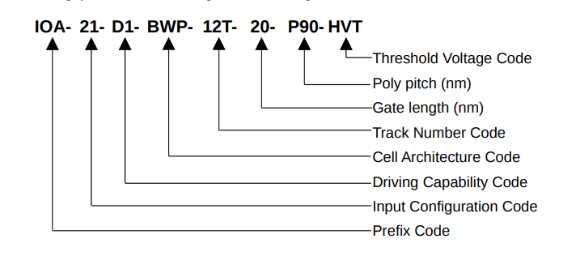
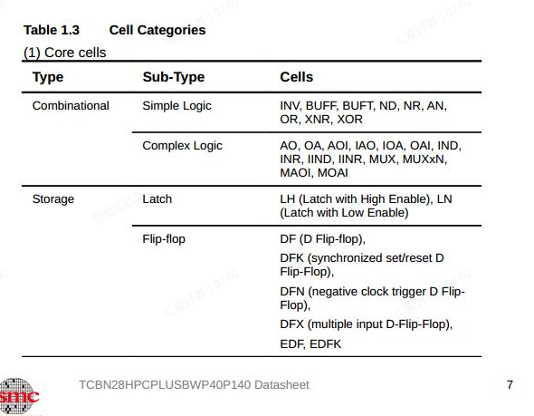
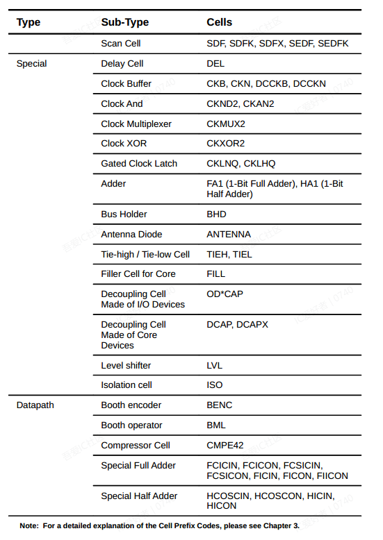
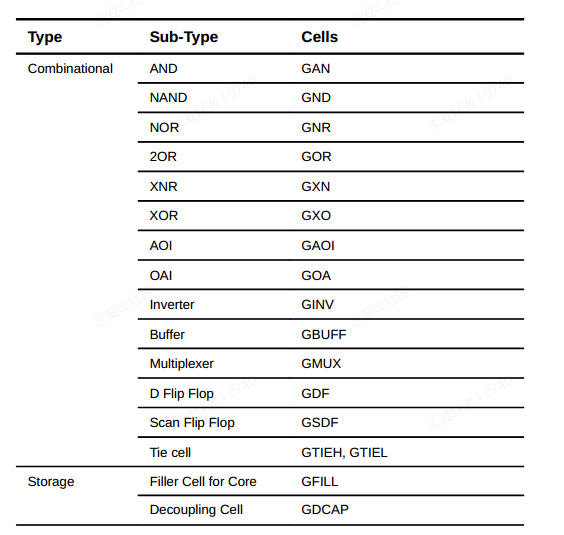
学完自检：合上笔记你能答出来吗
- 说出后端 PR 全流程的步骤顺序，每步一句话目的。
- 组合逻辑和时序逻辑的区别？latch 和 DFF 谁是电平敏感、谁是边沿触发？
- 标准单元版图为什么要做成等高、对齐网格、电源线在上下边界？
- site、row、double-height row 分别是什么？std cell 摆放的黄金规则是什么？
- port、terminal、pin 三个概念分别属于哪个层面？绕线靠哪个实现物理连接？
- 默写 setup / hold 的计算公式。为什么 setup 公式有 Tc 而 hold 没有？谁决定最高频率？
- NLDM 和 CCS 模型的本质区别是什么？
- 为什么 powerplan 要用高层金属？串扰的根源是哪种电容？
- TT/FF/SS/FS/SF 五个 corner 是什么组合？WCS 和 WCL 的区别在哪？
- OCV / AOCV / POCV 三者的悲观度和精度如何演进？AOCV 的 derate 表有哪两个维度？
- CRPR 为什么要存在？它等于什么？实际 signoff 时 setup 和 hold 分别只对哪条路径加 derate？
- Positive skew 让谁受益、谁受损？为什么说 skew 是零和博弈？
- 解读 1P10M5x2y2z：每一项什么意思？本项目 power、clock、signal 各用哪些层，为什么？